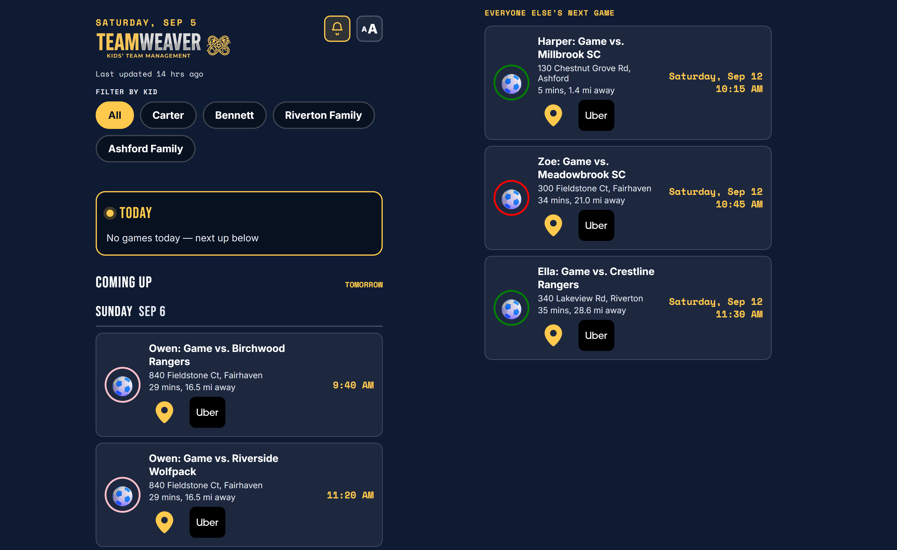

TeamWeaver

TeamWeaver pulls every grandkid's game schedule into one page. Five households, each running their own TeamSnap team app, used to mean checking five separate calendars just to know who's playing where and when — this weaves them into a single shared view everyone already has bookmarked.
The home screen leads with today's games, then the week ahead, then a quiet-week catch-all — "Everyone Else's Next Game" — so a kid with nothing on the calendar this week still shows up with whatever's next instead of disappearing entirely. Chips filter the whole view by kid or by family.
Features in production
Each game shows a live drive time and ETA computed from a home address via the Google Maps Distance Matrix API, plus one-tap buttons straight into Apple Maps or an Uber ride to the venue. A daily sync pulls every kid's TeamSnap webcal:// feed automatically, classifies each item as a game or practice, and parses the opponent and home/away split out of the raw event text. A text-size toggle and a "What's New" changelog panel (tap the bell) keep it usable for grandparents, not just the parents who built it. A Full Schedule page lists everything synced, independent of the week window, so a stale or broken feed is easy to spot.
Architecture
No-build-step vanilla JS front end deployed on Vercel, matching the same lightweight pattern as the other apps in this set. Airtable holds Kids and Events; a Vercel cron job runs the sync once a day, normalizing each webcal:// feed URL and deduping/updating records by ICS UID. The Google Maps Distance Matrix API supplies drive times. Auth is a custom login page backed by a SHA-256-hashed session cookie — the same pattern as Home Assistant — rather than the browser's native Basic Auth popup.
Up next
Deciding how a kid who plays for two different teams should be represented — right now the second team's games get folded into the first team's feed via a note rather than having their own field.